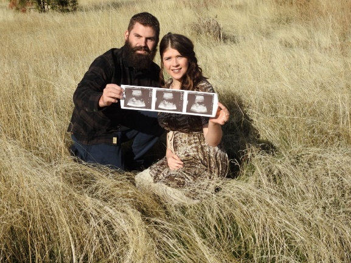
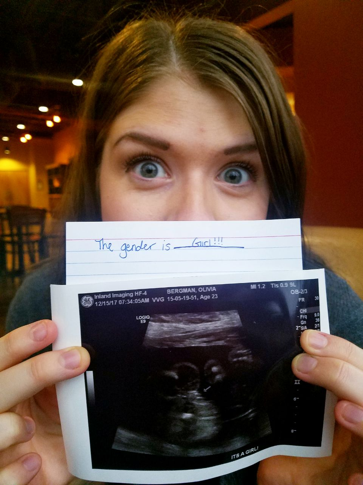

Faith
Why are you so worried?
Then on September 27, 2017 I had a vision in my dream of God sending an angel to tell me something very comforting.


Fast forward to early Fall of 2017, I wrote God a letter. A personal letter letting Him know why I want a baby. I hinted to him I want a little girl so she can have a loving and healthy relationship with her daddy! A couple days later we found out we were pregnant and had a feeling I was carrying a girl! We were full of emotions and all the what if’s.

Then on September 27, 2017 I had a vision in my dream of God sending an angel to tell me something very comforting. I remember her so vividly. The angel was a woman, with long wavy brown hair, dressed in white, had a cute button nose and wore glasses. The background was very plain, no scenery other than another angel in back at her desk. The beautiful angel looked directly in my eyes with a soothing voice saying, “why are you so worried about your pregnancy?” I immediately thought to myself “Don’t you know I just lost my baby the previous year!?” I knew right then everything was going to be okay and that God was with me. I wanted to speak to her but couldn’t. We just looked into each other’s eyes in silence. I then woke up that morning excited to tell my husband whom I encountered. My husband never doubted me. The angel helped me and comforted me.
I then noticed something very interesting after I had my vision. I calculated many times the day the angel spoke to me and the day my first baby had passed, and it was exactly 9 weeks and 3 days! Meaning God sent an angel at the exact number my baby passed the previous year. How awesome is that!? It just shows my faith was strengthened by 1,000 miles.
Did people say negative remarks about me having complications regarding my pregnancy? Yes. Did that stop me from trusting God? No. I knew God sent an angel to speak to me for a very good reason, to help people understand to not be afraid, trust God and to have hope. People wanted me to doubt God and myself and that did not stop me! I worked out my entire pregnancy, including lots of hardcore weight training, did things people told me NOT to do, had so much confidence that the delivery of my baby will be so wonderful and told many people about the angel God sent me (including strangers).
“For God hath not given us the spirit of fear; but of power, and of love, and of a sound mind.”
2 Timothy 1:7